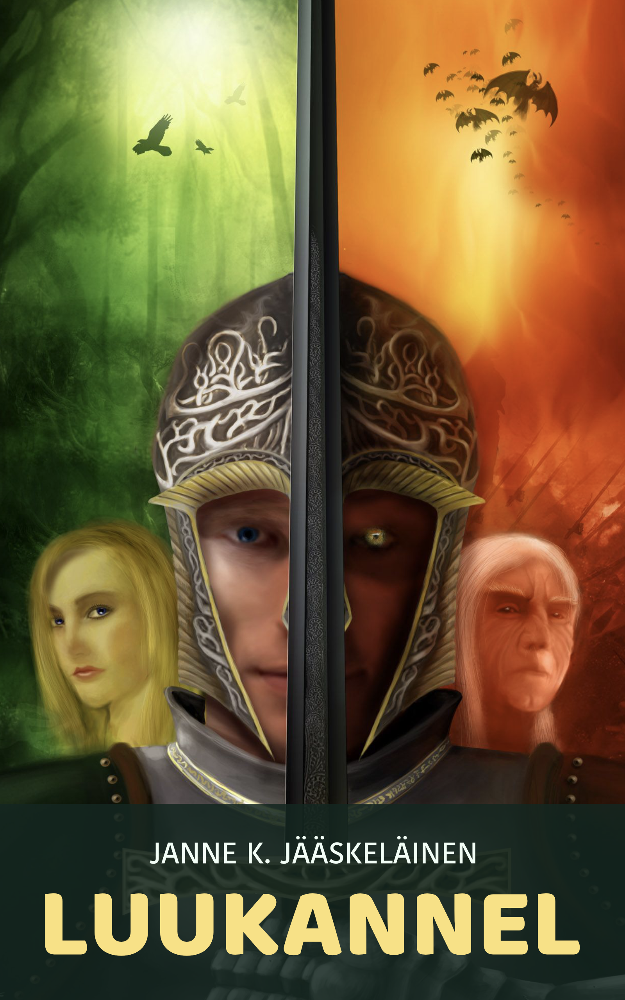

Fantasiaromaani · 2009
Luukannel
Muinaiseen Suomeen sijoittuva fantasiaromaani, jossa myytit, sota ja kohtalo kietoutuvat yhteen.
Koko kirja luettavissa maksutta · 37 lukua
Sisältöhuomio: kirjassa kuvataan väkivaltaa ja seksuaalista väkivaltaa.
Koko tarina
Sisällys
Valitse luku tai aloita alusta. Viimeksi avattu luku tallentuu vain omaan selaimeesi.
- 01Luku 1n. 11 min
- 02Luku 2n. 10 min
- 03Luku 3n. 7 min
- 04Luku 4n. 6 min
- 05Luku 5n. 6 min
- 06Luku 6n. 7 min
- 07Luku 7n. 16 min
- 08Luku 8n. 10 min
- 09Luku 9n. 6 min
- 10Luku 10n. 8 min
- 11Luku 11n. 7 min
- 12Luku 12n. 11 min
- 13Luku 13n. 8 min
- 14Luku 14n. 8 min
- 15Luku 15n. 8 min
- 16Luku 16n. 8 min
- 17Luku 17n. 9 min
- 18Luku 18n. 7 min
- 19Luku 19n. 9 min
- 20Luku 20n. 10 min
- 21Luku 21n. 8 min
- 22Luku 22n. 8 min
- 23Luku 23n. 10 min
- 24Luku 24n. 12 min
- 25Luku 25n. 8 min
- 26Luku 26n. 12 min
- 27Luku 27n. 8 min
- 28Luku 28n. 6 min
- 29Luku 29n. 7 min
- 30Luku 30n. 10 min
- 31Luku 31n. 7 min
- 32Luku 32n. 8 min
- 33Luku 33n. 11 min
- 34Luku 34n. 8 min
- 35Luku 35n. 5 min
- 36Luku 36n. 7 min
- 37Luku 37n. 3 min
37 lukua. Yksi tarina.